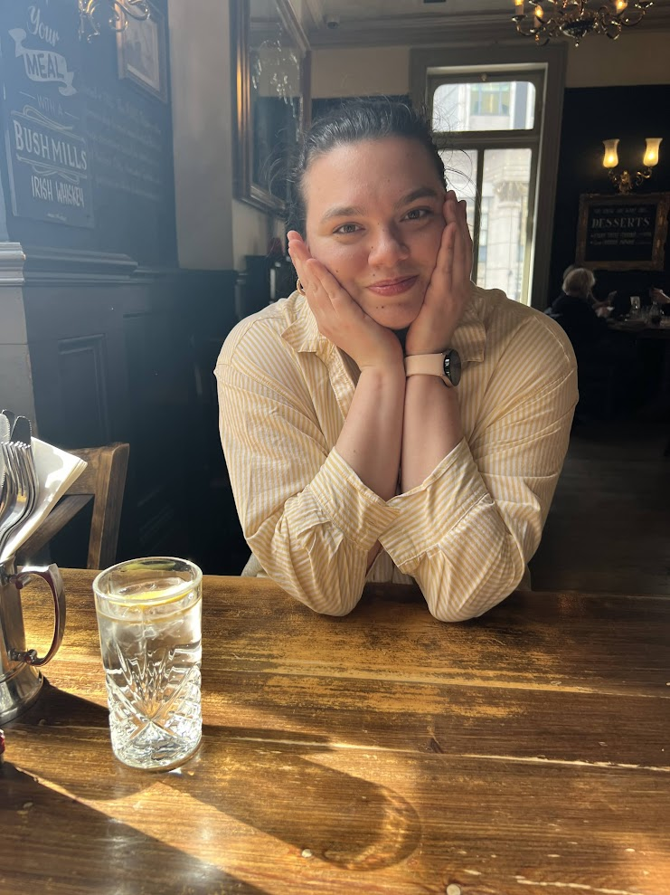

All About Anna
Hi! I’m Anna, a fourth year graduate student at the University of Washington in the Atmospheric and Climate Science Department studying the stratosphere–troposphere exchange, ozone transport, and climate variability. I also love baking, endurance sports, and building a life full of curiosity.
This website is a little mix of my academic life and the things that keep me grounded outside of research.
Contact me: ahall25@uw.edu
